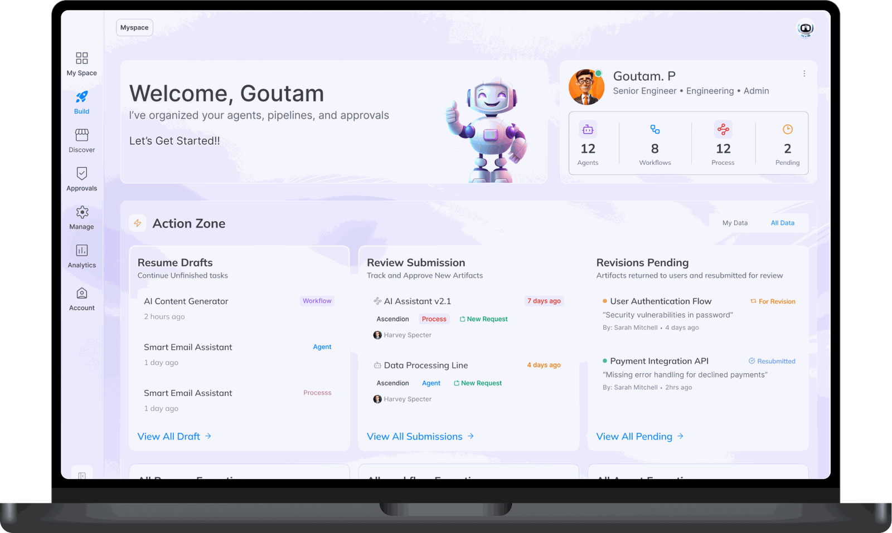
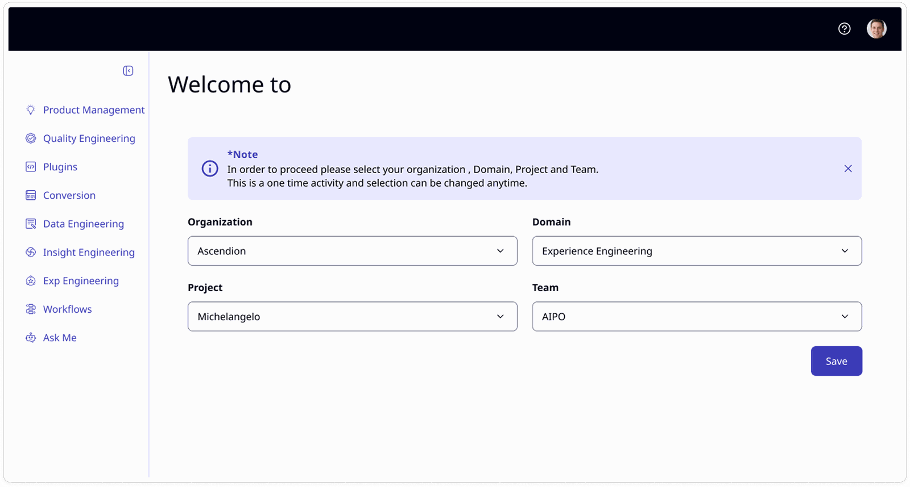
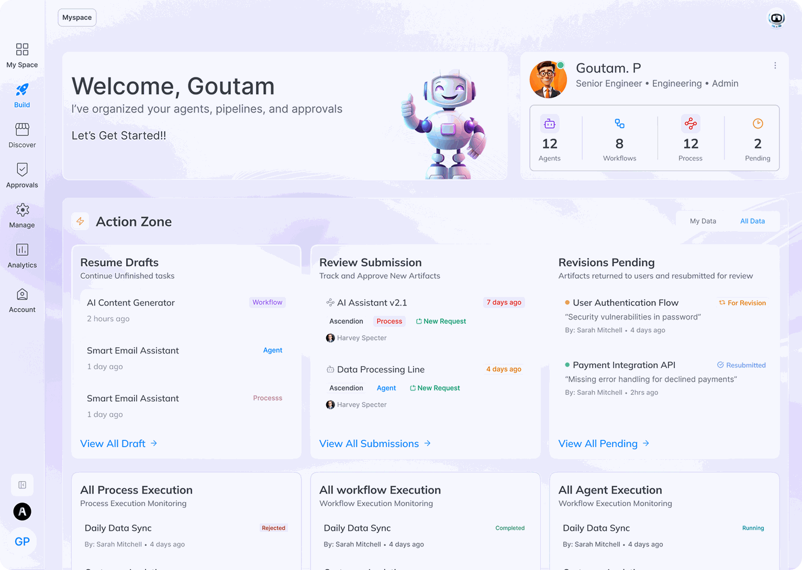
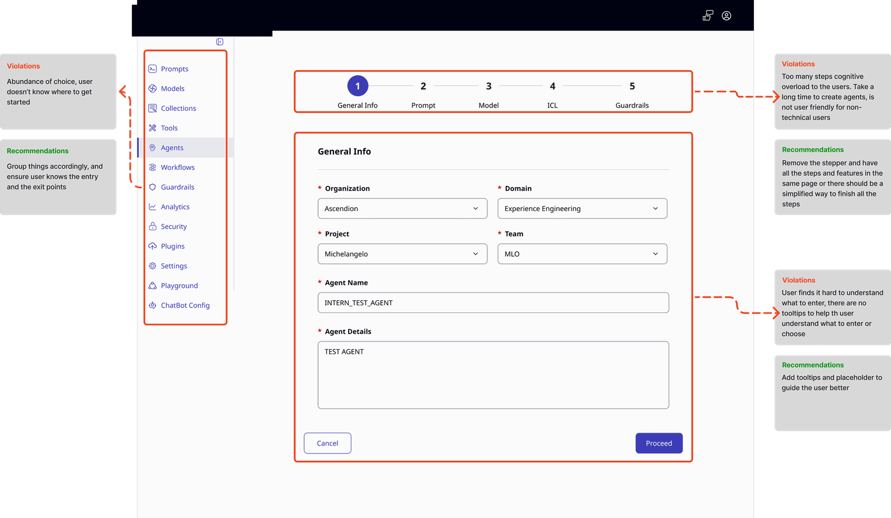
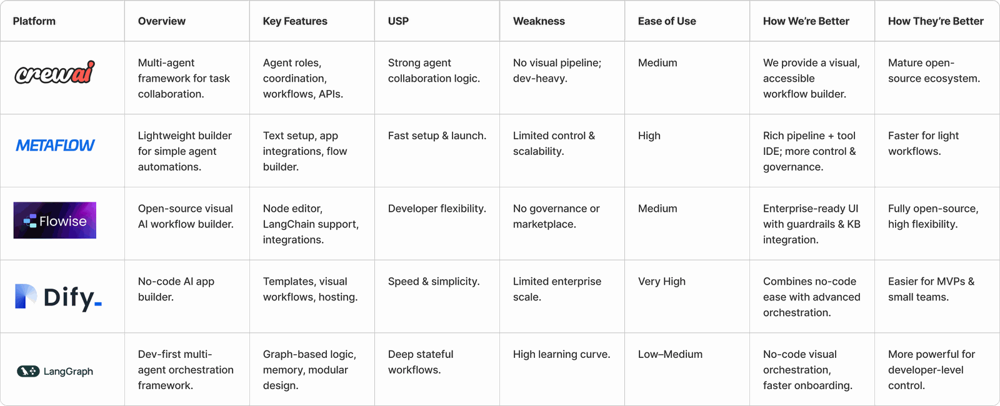
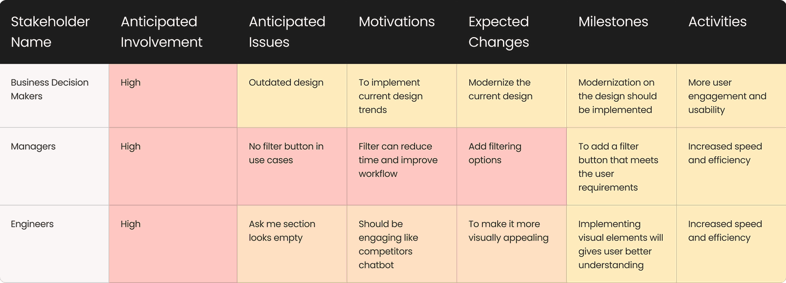
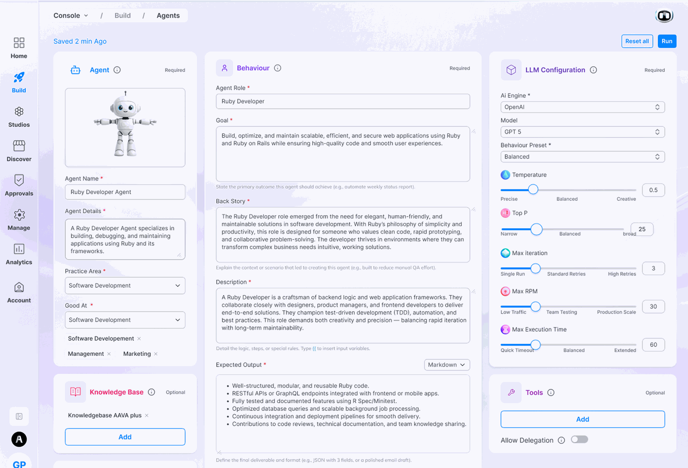
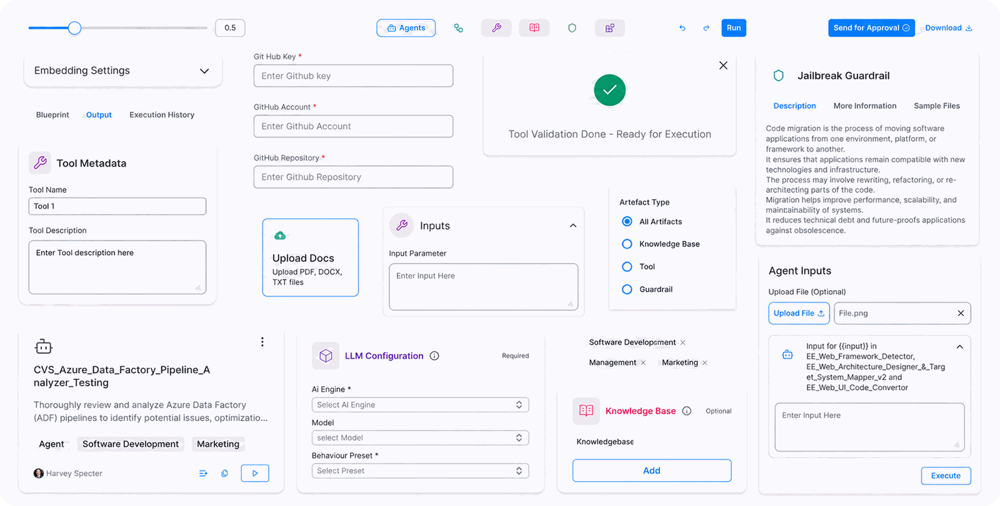
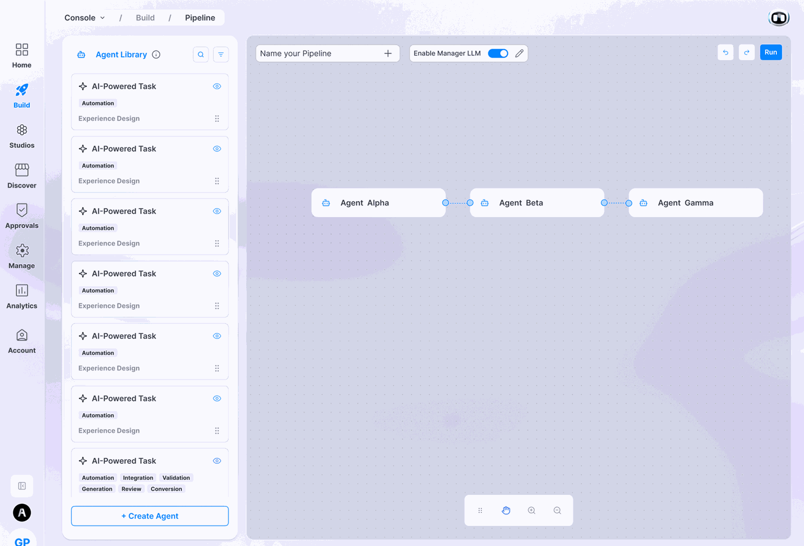
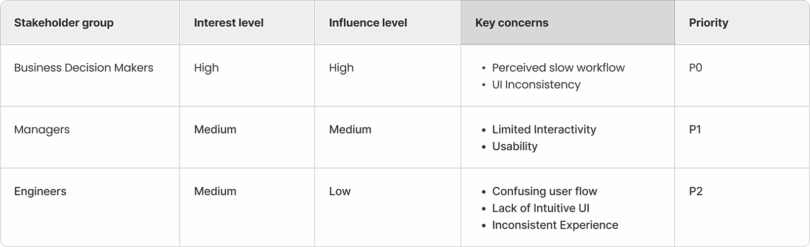

Enterprise Console · Ascendion · Mar 2025 – present
Day Zero
The agent-building tools split into two camps: powerful but developer-only, or easy but unfit for enterprise. None of them had governance. Console had to be all three at once.

The whole thing, in six lines
- 01
Ascendion had shipped an agentic platform and almost nobody was using it. The rebuild was funded to fix that.
- 02
The audit named four problems. Two of them were the same problem, one task split across two tabs.
- 03
Every competitor was either powerful but developer-only, or easy but unfit for enterprise. None had governance.
- 04
So Console took two bets that pull against each other: freedom to build from nothing, and a gate on reuse.
- 05
Thirteen flat navigation items became five intentions, grouped by verb, a structure that scales.
- 06
Adoption rose roughly 50% over the previous version. Agent output quality is still the weak point.
The situation
Ascendion had already built an agentic platform. Almost nobody was using it.
The first version of Console let enterprise teams create AI agents and chain them into workflows. It shipped, and it stalled. Two things were wrong at once: the agent technology underneath wasn't producing good enough output, and the interface didn't let people build the thing they actually came to build.
That mattered commercially. Ascendion's clients were enterprises that wanted AI inside their workflows and had no idea how to implement it. The company's answer was to sell them a platform for building agents specific to their own processes. But a product with weak adoption can't be sold as an enterprise solution.
So the rebuild was funded on two fronts: strengthen the agent technology, and redesign the experience so adoption followed. Design owned half of a commercial bet.

Who actually uses this
Five roles, all building for themselves.
Developers, DevOps, QE engineers, engineering managers and product managers. A QE engineer builds an agent that writes user stories. A PM builds one that drafts PRDs. Developers build for the SDLC, but not as one thing.
The full SDLC is too large to be a single pipeline. So developers don't build one. They chain small agents instead: take the design handed over by a classifier agent, arrange the work in VS Code, push to GitHub, each agent passing to the next in sequence.
That behaviour set the unit of the product. The thing a user builds isn't a workflow. It's an agent that composes with other agents.

What was actually broken

The audit named four problems. Two of them were the same problem.
Old Console put thirteen items in one flat side panel: Prompts, Models, Collections, Tools, Agents, Workflows, Guardrails, Analytics, Security, Plugins, Settings, Playground, ChatBot Config.
Almost every one is a type of object: thirteen equal choices, with nothing indicating which you needed, in what order, or which existed only to serve the others.
Create a guardrail inside an agent and it lived in one tab. Attaching that guardrail to the same agent happened in another.
One conceptual task, make a rule and apply the rule, split across the interface. Users got lost inside a job they had already started.
That single fracture accounts for both of the first two findings. "Inconsistent UI" and "difficult navigation" weren't separate problems; they were one structural failure described from two angles. Naming that mattered, because it meant the fix wasn't visual cleanup. It was consolidation.
What I didn't know going in
Three sharply different native habitats, and no obvious principle to collapse them.
- Developers live in VS Code, with resizable panes, several sections open at once, and a layout they arrange themselves
- DevOps engineers want something terminal-shaped, because that is the surface they trust
- Product managers want step by step, because their risk is losing the thread of a process
Console is configurable enough that almost anyone can build an agent for their own use, and people outside these roles do. But these were the habits we designed against, alongside engineering managers. Building a separate interface for each was never viable, and there was no obvious principle that collapsed them into one. We went into the work without it.
What we landed on, that every persona ultimately converges on text, was substantially a bet rather than a validated finding. It held up in adoption, but it wasn't proven before we committed to it.
Day zero: the thing nobody had
Two camps, one tradeoff, and governance missing from all of it.
We assessed CrewAI, Metaflow, Flowise, Dify and LangGraph, and included two columns most competitive audits skip: how we're better and how they're better.
- Developer-first: CrewAI, LangGraph, Flowise. Real orchestration power. Also dev-heavy, a high learning curve, and in CrewAI's case no visual pipeline at all.
- Simplicity-first: Dify, Metaflow. Very high ease of use. Also limited control, and limited enterprise scale.
One axis, one tradeoff: power or accessibility, pick one. Nobody occupied the corner where both were true.
Flowise: "no governance or marketplace." Dify: "limited enterprise scale." Metaflow: "limited control & scalability."
Nobody had governance. The developer-first tools assumed whoever was building was technical and trusted. The no-code tools assumed the stakes were low. Neither assumption survives contact with an enterprise, where the person building an agent is frequently not the person accountable for what it does.
The principle the team organised around was day zero, a user arriving with a process specific to their own organisation, needing to build for it from nothing, and governance, so that freedom is survivable at enterprise scale.
At enterprise level you have to give users the freedom to build what they need. Not a version of what someone else needed.
Hand people primitives and total freedom, and you have also handed them the ability to build something unsafe, unreviewed and unrepeatable, inside a company that will be held responsible for it. That tension is the design problem.

Who I actually had to convince
The most accurate diagnosis had the least power.
| Group | Interest | Influence | Key concerns | Priority |
|---|---|---|---|---|
| Business decision makers | High | High | Perceived slow workflow · UI inconsistency | P0 |
| Managers | Medium | Medium | Limited interactivity · usability | P1 |
| Engineers (the actual users) | Medium | Low | Confusing flow · unintuitive UI · inconsistent experience | P2 |
The most accurate diagnosis had the least power. Engineers named the actual failures and sit at low influence, P2.
The highest-priority concern was a perception. "Perceived slow workflow" is the honest phrasing, and it's the P0.
And the two connect. "Engineers" here are the people who actually use Console: the developers, DevOps and QE engineers from §02 who build agents all day. So the group with the sharpest diagnosis and the least influence was the user base.
That describes the job precisely: carry the users' accurate diagnosis into language the people funding the work would act on. The heat map wasn't a deliverable. It was a map of where the argument had to be won.

Decision: killing the stepper

Agent creation used to be a five-step wizard. It is now one page.
The old flow moved through General Info → Prompt → Model → ICL → Guardrails, one screen at a time. That's the conventional answer to a complex configuration task, and on paper it's defensible.
The audit found the opposite in practice: five gated steps meant a long time to create a single agent, no way to see the whole shape of what you were configuring, and, the finding that mattered most commercially, an experience hostile to non-technical users, the exact audience Console was being sold to reach.
A single page is denser and less forgiving at first sight. A stepper is gentler on arrival and more punishing thereafter. It hides the whole from you, makes going back expensive, and turns one task into five commitments.
We took the density. On a builder people return to constantly, that cost is paid once; the cost of a wizard is paid every time.
Most case studies say "we considered a wizard." Console had one, and we removed it.
Decision: one playground
Every persona converges on text or code. So differentiate at the edge.
The obvious move is a tailored experience per role. It's also the wrong one: it multiplies surface area and fragments the product into five half-maintained things.
What the persona mapping surfaced: every persona converges on the same two output types. A developer wants code and links. A PM wants text, delivered as a PDF, a DOC, or an MD file.
So the differentiation didn't belong in the playground. It belonged at the edge. One playground. One input model. Output rendered as text universally, with export format as the only thing that varies by role.
Everything that made each persona distinct was deliberately given up. Developers don't get the resizable multi-pane environment they're used to. PMs don't get the step-by-step scaffolding that protects them from losing the thread.
What that bought was a single coherent product one team could maintain and every role could learn once. On a platform sold into enterprises as a general capability, coherence was worth more than fit.

Decision: the canvas gets the room
Explicitness traded for calm.
The first pass at the builder came from another designer on the team, and it was boxy: every element fully enclosed in its own rectangle.
My objection was about what the surface is for. A pipeline builder is an ideation surface: someone composing a workflow is generating ideas while they work. Containers that fence every element fight that.
- Containers removed entirely; padding cut back
- Secondary icons reduced to minimum weight
- Roughly 65% of the screen given to the canvas
- The agent library collapsible, so the canvas takes full width for large builds
Boxes make an interface explicit: clear boundaries, obvious affordances. Removing them spends all of that. We weighed it before committing: containment was adding more cognitive load than it removed. The team agreed to reduce the builder to two things a user interacts with, the canvas and the agent library, and to accept the loss of explicitness.
No difficulty was reported. Users singled out dragging agents from the library onto the canvas as what made building fast.

The structure: grouped by verb
Thirteen peers became five intentions.
- MySpace: where you land. Your own work.
- Build: everything you make, agents, pipelines, APB, knowledge bases, tools, guardrails
- Studios: separate applications the platform links out to. Entitlement-controlled: a client without the entitlement doesn't see the item at all, rather than seeing it locked.
- Discover: the marketplace of what others published
- Approvals: what's waiting on a decision
- Manage: roles and access control. Admins only.
Group by the verb, not the object. The six things you can build don't compete at the top level. They nest under Build, because "I want to make something" is a single intention.
That collapses thirteen peers into five intentions. It also scales: adding a seventh buildable object type adds nothing to the navigation.
Studios sit in the navigation but leave the product when clicked: a new tab, a separate application. A nav item that doesn't keep you inside the product breaks the containment the rest of the structure promises.
This was an engineering constraint, not a design choice. The dev team flagged that folding the studios into Console would make it a very heavy application, and that running them in their own environment was the better call. That reasoning is sound. It still leaves a seam in the navigation that I couldn't close from the design side, and I've written what I'd do about it in the last section.
Two tiers, not six things
Guardrails, tools and knowledge bases are supporting components. Each has its own creation flow, and each exists to be attached to something else. Agents, pipelines and processes are what you compose from them. Build isn't a category. It's a workshop with a parts shelf.
A component doesn't go straight into circulation: build it, run it in the playground, then send it for approval. Once approved it lands in your project database and can be attached to anything you build afterwards. That's why Approvals earns a top-level place. It's the gate every reusable part passes through.
The obvious fix for "this task spans two tabs" is to put everything on one screen. That's not what happened. Creation and attachment are still separate, deliberately. The old product split them by accident, leaving a task cut in half; the new one separates them by layer, with a governed library in between. One is fragmentation. The other is architecture.
Decision: the model belongs to the agent
A pipeline inherits its agents' models. It cannot override them.
Model configuration is available in agent creation, and nowhere else. The alternative would be to let a pipeline override its agents' model settings, convenient in the moment, and it would have made pipelines feel more powerful.
Model choice is part of what an agent is. Allowing a pipeline to override it would mean the same agent behaves differently depending on where it's used, and the entire composition model rests on an agent being a known quantity you can drop anywhere.
Every tier owns its own properties and higher tiers inherit rather than override. That's what keeps a reusable part reusable.
What happened
Adoption rose roughly 50% over the previous version.
over the year after launch
I worked closest to
in one Build surface
collapsed into intentions
Console is deployed across multiple enterprise clients; at the client I worked closest to, it reached 1,000+ users.
Our senior director reported it, measured across the year following deployment. I don't have visibility into how it was calculated, which is worth saying rather than presenting it as my own measurement.
What users named specifically:
- Ease of agent and pipeline creation: one screen for each, rather than a configuration journey
- The build-and-test model: make it, run it in the playground, adjust
- Drag-and-drop composition from the library onto the canvas, which they described as what made building quick

What didn't work
Agent output quality fell short, and part of that was a design problem.
Users had to supply considerably more context than expected before an agent returned something usable, and revise repeatedly to get there. The root cause sat in the model layer rather than the interface.
If users must supply more context to get good output, then the surface where they supply context is a design surface. Context scaffolding, worked examples, inline guidance on what a given agent needs. All of that is interface work that measurably changes output quality.
Attributing the whole thing to the model would be accurate but incomplete.
V2: describe it instead of configuring it
Version two added natural-language creation across every one of the six build types.
Rather than filling a configuration form, a user describes what they want (an agent, a pipeline, an APB process, a guardrail, a tool, a knowledge base) and it gets built. The form-based path stayed; the prompt became the faster route in.
The complaint in V1 was that agents needed far more context than users expected to give. A configuration form is a poor instrument for supplying context. It asks for values, not intent.
A prompt is a context-shaped surface. Letting someone say what they are trying to achieve, in their own words, gathers the thing the model was starving for. The fix for a model problem turned out to be an interface.
What I'd do differently
I'd make it as simple as ChatGPT.
One prompt box. You describe what you want (an agent, a pipeline, a process, a guardrail, a tool, a knowledge base) and it gets built. The process assembles itself above the prompt box as it happens, so you watch the thing take shape rather than waiting for it. You pick your project, or drop into a particular studio, from the same place.
If one prompt box can create any of the six build types, the verb-grouped navigation I'm proudest of matters less. You don't need a workshop with a parts shelf if you can simply ask for the part.
Both things are true: that structure was right for the product as it existed, and a prompt-first product is a different product that wouldn't need as much of it. V2's natural-language layer was the first step in that direction, and it isn't finished.
The seam in the navigation
Studios still open in a new tab. I understand why. Console would be too heavy an application if the studios lived inside it, and the dev team was right to separate the environments. But the user doesn't experience an architecture decision; they experience a navigation item that ejects them from the product. If I had that one again I'd argue for signalling the jump explicitly rather than letting it look like every other destination in the panel.
And the part that's genuinely unfinished
Accessibility is the weakest area, and I ranked it last. The reusable components in the design system still don't meet the standard.
There's a structural reason it's hard, though it isn't an excuse. An agentic platform needs components the design system has no patterns for: streaming output, confidence and provenance, human-review states. Building them has meant breaking some of our own rules rather than extending the system to cover them properly. Fixing that means solving it at the system level, not the screen level, and that work hasn't happened yet.
End of the case study
Questions about any of these decisions?
The parts I’d most like to be pushed on are the day-zero bet and the output model. Both were judgement calls, and I can show the working.